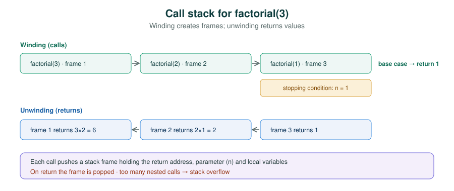

Features of recursion
What is recursion?
Understanding recursion ★
- Recursion is a programming technique where a function or procedure calls itself to solve a problem or execute a task.
- Recursion does not rely on iterative loops; instead it uses self-reference to break a complicated problem down into more manageable subproblems of the same form.
- A recursive solution is built from two kinds of case:
- the base case (stopping case), which returns a value directly without making a recursive call;
- the general / recursive case, in which the function calls itself on a smaller instance of the problem.
- The recursive calls must always move towards the base case so that the chain of calls terminates after a finite number of steps; otherwise the program runs indefinitely and eventually exhausts the stack.
Describe what is meant by recursion.
Answer
Q12(a) One mark per mark point (Max 2)
- A process using a function or procedure defined in terms of itself / calls itself.
- A recursive process must have a base case (which is a way to return without making a recursive call) // terminating solution // concept of unwinding described
- There must (also) be a general case where the recursive call takes place.
Essential features of recursion
Essential features of recursion ★ For a recursive algorithm to work correctly it must have all three of the following features:
- It must call itself — there is a general case in which the recursive call takes place.
- It must have a base case (a stopping condition) that allows it to return without making a further recursive call.
- It must change its state and move towards the base case, so that the base case is reached after a finite number of calls.
A stack is used to implement recursion. State the three essential features of recursion.
Answer
Q9(b) One mark per mark point (Max 3)
- A recursive algorithm must call itself / have a general case
- It must have a base case / have a stopping condition
- It must change its state and move towards the base case
How recursion is expressed in a programming language
Expressing recursion in a programming language
- Recursion is written as an ordinary subroutine whose body contains a call to itself, with a modified argument.
- A function version returns a value; a procedure version performs an action (e.g. prints or updates an array) and returns nothing.
- The parameter list carries the state that changes between calls (e.g.
ninfactorial(n)), and the return value carries the partial result back to the caller.
Example: factorial calculation
def factorial(n):
if n == 0 or n == 1: # base case
return 1
else:
return n * factorial(n - 1) # recursive call with a smaller instance
result = factorial(5)
print(result)
# Output: 120 (5! = 5 * 4 * 3 * 2 * 1)
factorialbreaks the problem into smaller instances, multiplyingnbyfactorial(n - 1)until the base case (n == 0orn == 1) is reached.
Importance of a proper stopping condition
- A proper stopping condition / base case is essential to avoid stack overflow: if the function never stops calling itself, memory is exhausted and the program crashes.
- Each recursive call must bring the state closer to the base case (e.g.
n - 1), never further away.
Designing a stopping condition
- Identify the simplest instance of the problem for which the answer is known directly — this becomes the base case.
- Check that every recursive call reduces the problem towards that simplest instance, so the recursion terminates in a finite number of steps.
Recursion: benefits and drawbacks
When the use of recursion is beneficial ★
- Programs can be written using either recursion or iteration; the choice depends on the problem.
- Recursion is at its best when a problem can naturally be broken down into smaller, repetitive subproblems of the same form, especially where there are many possible branches and an iterative solution would be complex — e.g. tree/graph traversal, divide-and-conquer algorithms, mathematical series.
- It is generally less efficient than iteration in time and memory, because every call adds a stack frame.
Recursion
| Benefits | Drawbacks |
|---|---|
| Concise – often shorter and clearer, especially for trees, fractals and divide-and-conquer problems | Performance – repeated function calls are CPU- and memory-intensive, so execution is slower |
| Simple – states what must be done rather than how, improving readability and maintainability | Debugging – tracking the state of nested calls is harder |
| Limited application – not all problems suit a recursive solution |
Iteration
| Benefits | Drawbacks |
|---|---|
| Performance – more efficient than recursion and uses less memory | Complexity – can need more lines of code for the same task |
| Debugging – easier to understand and trace | Less concise – harder to read for naturally recursive problems |
| Wider application – suitable for a wider range of problems |
Describe when the use of recursion would be beneficial and give an example. Description … Example …
Answer
Q11 One mark per mark point (Max 3)
- MP1 Recursion is beneficial for problems that can be broken down into smaller, repetitive problems
- MP2 … especially for problems that have many possible branches / are too complex for an iterative approach
- MP3 An example e.g. solving mathematical series, sorting a pile of documents, etc.
Writing recursive algorithms
Writing recursive algorithms Here is a recursive algorithm for a countdown from 10 to 0, written in Python.
Step 1 – Create the subroutine (a function here, because it returns a value) and identify its parameters:
def countdown_rec(n): # n is the parameter passed when we call the subroutine
Step 2 – Add a stopping condition – when n is 0 the function stops:
def countdown_rec(n):
print(n) # output the starting number
if n == 0: # stopping condition
return
Step 3 – Add the recursive call:
def countdown_rec(n):
print(n)
if n == 0:
return
countdown_rec(n - 1) # recursive call
Step 4 – Call the function:
def countdown_rec(n):
print(n)
if n == 0:
return
countdown_rec(n - 1)
countdown_rec(10) # call the function with 10 as the starting value
Output to user: 10, 9, 8, 7, 6, 5, 4, 3, 2, 1, 0
Tracing recursive algorithms
Writing and tracing recursive algorithms ★
- To trace a recursive algorithm, follow each call in turn, recording the changing parameters and the value returned at each level until the base case is reached, then work back up (unwind).
- Starting
countdown_rec(5):
| Function call | print(n) | countdown_rec(n - 1) |
|---|---|---|
countdown_rec(5) |
5 | 4 |
countdown_rec(4) |
4 | 3 |
countdown_rec(3) |
3 | 2 |
countdown_rec(2) |
2 | 1 |
countdown_rec(1) |
1 | 0 (return) |
A Fibonacci sequence is formed by adding together the two preceding numbers, e.g. 0, 1, 1, 2, …. The recursive function below calculates and returns values in the sequence. Complete the trace table for the call Fib(5).
FUNCTION Fib(Number : INTEGER) RETURNS INTEGER
IF Number <= 1 THEN
Result ← Number
ELSE
Result ← Fib(Number – 1) + Fib(Number – 2)
ENDIF
RETURN Result
ENDFUNCTION
Answer
Q12(b) One mark per mark point (Max 5):
call numbercolumn correct;function callandNumbercolumns correct;Resultcolumn down to base case (Winding) rows 1–6 correct;Resultcolumn down from base case (Unwinding) rows 7–10 correct;- Return value column correct.
| Call number | Function call | Number | Result | Return value |
|---|---|---|---|---|
1 |
Fib(5) |
5 |
Fib(4) + Fib(3) |
|
2 |
Fib(4) |
4 |
Fib(3) + Fib(2) |
|
3 |
Fib(3) |
3 |
Fib(2) + Fib(1) |
|
4 |
Fib(2) |
2 |
Fib(1) + Fib(0) |
|
5 |
Fib(1) |
1 |
1 |
1 |
6 |
Fib(0) |
0 |
0 |
0 |
(4) |
Fib(2) |
2 |
1 + 0 |
1 |
(3) |
Fib(3) |
3 |
1 + 1 |
2 |
(2) |
Fib(4) |
4 |
2 + 1 |
3 |
(1) |
Fib(5) |
5 |
3 + 2 |
5 |
The recursive procedure Delete() is defined as follows. An array Numbers holds a sorted set of non-zero positive integers; unused cells contain zero. Complete the trace table for CALL Delete(1, 15).
PROCEDURE Delete(Index, Target)
IF Numbers[Index] > 0 THEN
IF Numbers[Index] >= Target THEN
Numbers[Index] <- Numbers[Index + 1]
ENDIF
Index <- Index + 1
CALL Delete(Index, Target)
ENDIF
ENDPROCEDURE
| Numbers | [1] | [2] | [3] | [4] | [5] | [6] | [7] | [8] | [9] | [10] |
|---|---|---|---|---|---|---|---|---|---|---|
| 2 | 3 | 7 | 11 | 15 | 17 | 19 | 23 | 0 | 0 |
Answer
Q13 One mark for each marking point
- MP1 Correct Index and Target columns
- MP2 Correct Numbers[5] column
- MP3 Correct Numbers[6] and Numbers[7] columns
- MP4 Correct Numbers[8] column and no incorrect data added to any other of columns [1, 2, 3, 4, 9, 10]
| Index | Target | [1] | [2] | [3] | [4] | [5] | [6] | [7] | [8] | [9] | [10] |
|---|---|---|---|---|---|---|---|---|---|---|---|
| 1 | 15 | 2 | 3 | 7 | 11 | 15 | 17 | 19 | 23 | 0 | 0 |
| 2 | |||||||||||
| 3 | |||||||||||
| 4 | |||||||||||
| 5 | 17 | ||||||||||
| 6 | 19 | ||||||||||
| 7 | 23 | ||||||||||
| 8 | 0 | ||||||||||
| 9 |
Translating between iteration and recursion
- Recursive algorithms can be translated into iterative ones, and vice versa.
- Comparing the countdown example:
# Recursive approach
def countdown_rec(n):
print(n)
if n == 0:
return
countdown_rec(n - 1)
countdown_rec(10)
# Iterative approach
def countdown(n):
while n >= 0:
print(n)
n -= 1
return
countdown(10)
- The recursive call is replaced by a
whileloop that checksn >= 0(so0is still printed, matching the recursive version). - The iterative form uses less memory (no stack frames) and is easier to debug, but can be less concise.
Compilation and stack
What happens when recursion runs?
How a compiler translates recursive code ★
- When a recursive function is called, the compiler / interpreter does not treat it like a loop. It must generate code that, for every call, saves the information needed to resume the caller.
- It uses a special structure called the call stack to keep track of each active function call.
The call stack
- Each time a function calls itself, the system stores a snapshot of that call (a stack frame) on the call stack. A stack frame contains:
- the function name and the return address — the place to return to when the call finishes;
- the values of parameters and local variables at that level;
- any intermediate results being held.
- This continues until the base case is reached.
Stack frames and unwinding
Stacks and unwinding ★
- Once the base case is reached, no further calls are made and the stack unwinds:
- the most recent call completes and returns a value;
- its stack frame is removed (popped) and control returns to the previous frame;
- this continues until the original call receives the final result.
- This is called stack unwinding.
Example: factorial(3)
def factorial(n):
if n == 0 or n == 1:
return 1
return n * factorial(n - 1)
Call stack trace
Winding (pushing frames):
factorial(3) → 3 * factorial(2)
factorial(2) → 2 * factorial(1)
factorial(1) → base case → returns 1
Unwinding (popping frames, returning values):
factorial(2) = 2 * 1 = 2
factorial(3) = 3 * 2 = 6
At the deepest point the stack holds factorial(3), factorial(2), factorial(1); each is popped as its return value passes back up.

Why understanding the call stack matters
- If there is no base case (or the recursive call moves away from it), the stack never stops growing and a stack overflow occurs, crashing the program.
- Recursive programs must therefore be designed so that the base case is always reached in a finite number of steps.
Summary
| Concept | Description |
|---|---|
| Call stack | Structure used by the compiler to store active function calls |
| Stack frame | Snapshot of a single call: local variables, parameters and return information |
| Unwinding | Returning values back up the stack after the base case is reached |
| Stack overflow | Recursive calls never stop, exhausting available memory |
Exam Question Index
| Sub-question | Exam point | Source |
|---|---|---|
| P31 Q12(a) | Show understanding of recursion | 2023 Summer P31 Q12(a) |
| P31 Q12(b) | Write and trace recursive algorithms | 2023 Summer P31 Q12(b) |
| P31 Q9(b) | Essential features of recursion | 2025 Winter P31 Q9(b) |
| P33 Q11 | When the use of recursion is beneficial | 2025 Winter P33 Q11 |
| P33 Q13 | Write and trace recursive algorithms | 2025 Summer P33 Q13 |